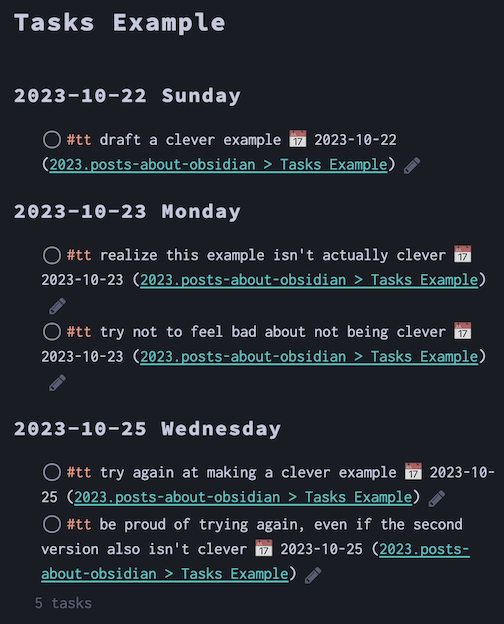

Obsidian Tasks Plugin
Note status: 
Assumed audience People at least passably familiar with Obsidian. See my other notes on Obsidian for more context.
beginning-to-use-obsidian
obsidian-plugins
What is the Tasks plugin?
Originally written by Martin Schenck and now expertly maintained by Clare Macrae, the Tasks plugin is the thing that ultimately convinced me to switch from Dendron to Obsidian for my default note-taking environment. It’s obviously the highest in my shortlist of obsidian-plugins.
It lets you track and display tasks using a variety of queries and filters, which then get dynamically displayed in other views of your notes. If the longevity of Markdown appeals to you, but you’d also like to augment that with other features, Tasks is a great place to start.
For example, if the “source code” (plain Markdown text) of a note contains the following instructions:
```tasks
not done
starts before tomorrow
(tags do not include #waiting)
group by happens
```
Then the “reading view” or “live preview” of the note can display a list of tasks from any of your Obsidian notes, nicely grouped together by day, and with optional links back to the original note that contains the task.
Here is an example with five different tasks, grouped into headings under three different days:

Patterns I Use Most
Task’s own documentation site might be the best I’ve ever seen or used. I highly recommend you consult it.
Here I’ll share a few of the patterns (i.e. queries and filters) I use most frequently, and then show how I connect them all at the end.
Global Query, or Separating Tasks from Regular Checkboxes
Many Markdown apps will turn - [ ] into a checkbox, and Obsidian follows suit here. By default, the Tasks plugin will treat every checkbox as a task, automatically querying every line that begins with a checklist.
This is a great default, especially if you’re new to using Markdown. I have notes going back about a decade at this point, through, and I’ve often used that checkbox pattern as a welcome reminder for components of my daily workplace routines. (Yes, I do indeed have ADHD, why do you ask?)
Since I don’t want to needlessly ask Tasks to query long out-of-date things that were just prompts, not things I truly needed to track, I immediately began using what Tasks calls a “Global Query” to separate regular - [ ] things from things that catch the attention of the Tasks plugin.
To be clear: Clare, who maintains the Tasks plugin, has said that the plugin is performant enough that these global queries aren’t really necessary—and I have no reason to doubt her! I just had already adopted this approach before seeing that message from her, and haven’t yet found a compelling reason to stop. So you likely won’t need to use this pattern, but I’m explaining why you might see that in my examples below.
I use #tt as my global query, since it’s simple to type and I can’t imagine every using that for a regular tag. Again, this might be entirely superfluous for most people, and even for me! I’m just explaining what I do, as of when I write this note on 2023-11-18.
Basic Query within a Single File
A basic query looks something like this:
```tasks
not done
filename includes {{query.file.filename}}
group by happens
```
Line-by-line, this will:
- start the Tasks query (with the
```taskscommand). - return only tasks that aren’t already done (with the
not donefilter). - return only tasks written are on this same file (with the
filename includes {{query.file.filename}}filter). - sort these according to the earliest of start date, scheduled date, or due date (with the
group by happensfilter). - ends the Tasks query (with the
```three backticks).
That {{query.file.filename}} query was recently added and has already proven extremely handy. I include the above query in a template for all my project files, and I used to have to remember to make sure that the file name was listed verbatim in the query. Now, however, this line of code always knows to just look on the same page where it’s included. A definitely time-saver!
Basic Query Across Files
In addition to the various project files, I keep a sort of “digital bullet journal” of daily notes in Obsidian. My daily template includes various Tasks queries, set up to search across other files.
A relatively basic query looks something like this:
```tasks
not done
starts before tomorrow
filename includes life.writing.acwrimo.2023.md
(tags include #td/writing)
```
Line-by-line, this will:
- start the Tasks query (with the
```taskscommand). - return only tasks that aren’t already done (with the
not donefilter). - return only tasks that aren’t far into the future (with the
starts before tomorrowfilter). - returns only tasks from a specific other file (with the
filename includes life.writing.acwrimo.2023.mdfilter). - returns only tasks with a specific tag (with the
(tags include #td/writing)filter). - ends the Tasks query (with the
```three backticks).
Usually I don’t use a filename query (like on line 4 above), and instead just have a query return all tasks with a certain tag (like on line 5). I figured I’d share an example that does both, though, just to show you how easily you can adjust the scope of what you see using the different filters.
Without that filename query, the above query would get any task that includes #td/writing. In my case, that would include ideas I’ve jotted down for my blog or digital garden, ideas for academic writing, ideas for things I’ve writing at work, etc. Since November is Academic Writing Month (…and here’s my post about AcWriMo2023 ), I wanted a more prominent and specific query reminding me to do this throughout the month.
Daily Note Task Queries
The ability to query and filter by tags allows you to display tasks in handy ways. I use multiple queries in my daily note templates to automatically display tasks in groups that work for me.
Here’s the main query I use:
```tasks
not done
starts before tomorrow
(tags do not include #td/work)
(tags do not include #td/writing)
group by tags
group by happens
```
Line-by-line, this will:
- start the Tasks query (with the
```taskscommand). - return only tasks that start before tomorrow, not ones further into the future (with the
starts before tomorrowfilter). - return only tasks that don’t have the
#td/worktag (with the(tags do not include #td/work)filter). - return only tasks that don’t have the
#td/writingtag (with the(tags do not include #td/writing)filter). - group the tasks by tag (with the
(group by tags)filter). - sort these according to the earliest of start date, scheduled date, or due date (with the
group by happensfilter). - ends the Tasks query (with the
```three backticks).
I put the above after two similar queries, each of which displays only tasks with #td/work or #td/writing tags.
This helps me context switch more easily throughout the day. I can ignore or even fold the entire heading that has my work-related tasks, jump to my writing-related tasks after my work is done, and then look at all the other tasks I in one long query. These include things like any classes I’m taking, any blogging or website maintenance I’ve tagged outside of the writing tag, paying recurring bills, etc.
Still to Write: Adding Time Elements to Tasks
I’m done bashing out the first version of this note, and I haven’t yet mentioned how to actually indicate date-related elements in Tasks. I’ll probably add more about this later. For now, here’s a link to the Tasks’ own Dates documentation page.
Coda
Hopefully this helps you better understand what the Tasks plugin can do, and whether you might want to use it yourself. It’s the most flexible solution I’ve found, and I’ve used quite a few options. If you’re not a Markdown fan like myself, Tasks might not be for you! But if you are—and I assume you probably are, if you’re still reading this—it’s well worth an hour of experimentation to see if it’ll suit your ways of working.
Good luck finding what works for you, whether or not this is it!